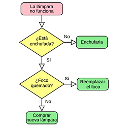

Diccionario
Algoritmo

- Definición:
-
Un algoritmo es un conjunto de pasos para llegar a hacer algo.
- Ejemplo:
-
Comprobar porque no enciende la luz lo podemos convertir en un algoritmo.
Diagrama de flujo
- Definición:
-
Es la representación gráfica de un algoritmo o proceso.
- Ejemplo:
-
El algoritmo para comprobar porque una luz no funciona se ha representado mediante un diagrama de flujo.
Interactivo

- Definición:
-
Que permite la interacción entre usuarios y sistemas informáticos.
- Ejemplo:
-
Nuestro robot es interactivo si reacciona ante estímulos externos como puede ser al pulsar un botón.

 Empezamos el proceso de creación y toca elegir un sensor, que te guste y te parezca interesante, sobre el que se fundamentará tu robot.
Empezamos el proceso de creación y toca elegir un sensor, que te guste y te parezca interesante, sobre el que se fundamentará tu robot. 
 Una vez elegido el sensor, en esta actividad vamos a establecer la similitud que tiene el sensor de tu robot con los sentidos humanos.
Una vez elegido el sensor, en esta actividad vamos a establecer la similitud que tiene el sensor de tu robot con los sentidos humanos. En esta actividad se plantean una serie de ejercicios para profundizar en la representación del sensor de tu robot, cuando acabes uno, pasa al siguiente. ¡Ánimo, intenta resolver cuantos más mejor!
En esta actividad se plantean una serie de ejercicios para profundizar en la representación del sensor de tu robot, cuando acabes uno, pasa al siguiente. ¡Ánimo, intenta resolver cuantos más mejor! Una vez que hemos elegido los elementos principales para tu robot, diseña mediante el dibujo de bocetos cómo será una vez montado. Puedes realizar estos dibujos en tu cuaderno o en formato digital en el ordenador o tableta, elige una de estas opciones.
Una vez que hemos elegido los elementos principales para tu robot, diseña mediante el dibujo de bocetos cómo será una vez montado. Puedes realizar estos dibujos en tu cuaderno o en formato digital en el ordenador o tableta, elige una de estas opciones. Diseña el funcionamiento del robot.
Diseña el funcionamiento del robot. Vamos a diseñar el programa para que el conjunto de tu robot: sensor-microcontrolador-actuador, funcione adecuadamente.
Vamos a diseñar el programa para que el conjunto de tu robot: sensor-microcontrolador-actuador, funcione adecuadamente. Una vez completada la fase de diseño y antes de pasar a la fase de creación del robot, leed y repasad en grupo cada una de las anotaciones realizadas hasta ahora en los cinco primeros pasos.
Una vez completada la fase de diseño y antes de pasar a la fase de creación del robot, leed y repasad en grupo cada una de las anotaciones realizadas hasta ahora en los cinco primeros pasos. En este ejercicio vamos a realizar el montaje de nuestro robot.
En este ejercicio vamos a realizar el montaje de nuestro robot.
 Comprueba el funcionamiento correcto del robot y haz una depuración de la programación del mismo, detectando posibles errores y corrigiéndolos.
Comprueba el funcionamiento correcto del robot y haz una depuración de la programación del mismo, detectando posibles errores y corrigiéndolos.